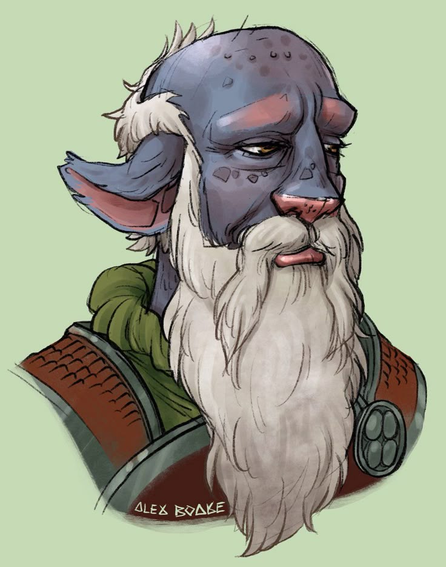
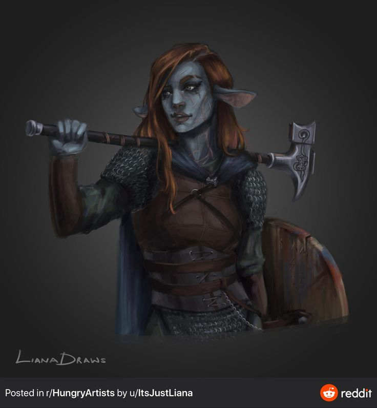
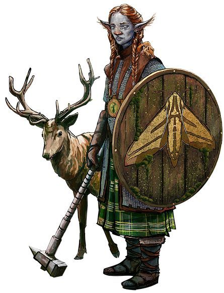
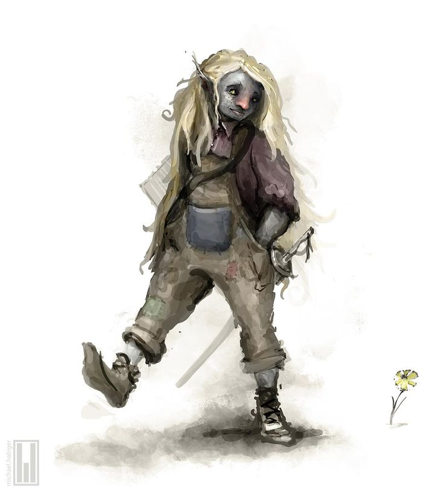

A Família Skjold governa Fryste Elver, onde os lagos se encontram com os mares congelados. Uma duquesia nascida de uma amizade tão antiga quanto a própria Aucrib, responsável, desde então, pelo abastecimento e pela fartura de todo o Reino de Aucrib.
✦ O DUQUE DE FRYSTE ELVER

✦ família skjold
Bennet Skjold
Vivendo entre os lagos e os mares congelados, ainda menino chegou a conhecer Aucrib em vida — o laço entre a deusa e sua família nasceu quando ela se esbarrou com o pai de Bennet, e os dois competiram numa disputa de pesca. Dali nasceu uma amizade tão dura quanto o gelo, e Aucrib confiou à família o abastecimento e a manutenção de alimentos do reino.
✦ A MARQUESA

✦ família skjold
Noelle Skjold
Filha de Bennet, Noelle é uma caçadora nata. Principalmente após a morte da mãe, passou a sair mais — sempre trazendo mais peças de carne e alguma lembrança de suas peripécias. Numa dessas voltou grávida, mas o pai a recebeu de braços abertos mesmo assim. Hoje atua como Marquesa, cuidando dos assuntos militares e leigos do reino.
✦ AS NETAS

✦ família skjold
Tania Skjold
Filha mais velha de Noelle, segue alguns dos passos da mãe — ainda muito nova para acompanhá-la de perto, mas seu avô Bennet dá conta do recado, treinando a neta em segurança.

✦ família skjold
Leina Skjold
A filha mais nova de Noelle vive colada ao avô pelo palácio real. Passa muito tempo nos jardins, contando as estrelas.